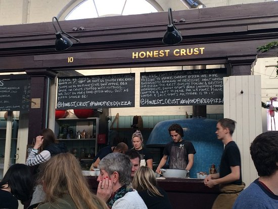

Lifestyle of manchester certainly gives off a different vibe ,despite the city's rather
small size there is quite a lot going on in the streets of Manchester be it food , nightlife,
sports,events you name it.So how about we give a litle overview of what you can look fowrad to.
FOOTBALL
It's no doubt when you hear the word Manchester you automatically think of Manchester United and thats
right. football is an extremely vital aspect of the city .It is home to the biggest club in England
Manchester united and their arch rivals and noisy neighbors Manchester City.football is what makes
Manchester such an appreciated city but there is a lot more to it than that either as a supporter,player or
you just want to dive deep into the football history.
Manchester united Museum and OLD TRAFFORD stadium tour is one of the most anticipated activities by football fans
its one of the best spots to begin as you dive into the clubs rich amazing history to see how United came
to be what it is today .With a tour led by club guides with deep knowledge about the club,get backstage
access to see what goes on behind the scenes at and maybe get a chance to meet your favorite players in person
,get a chance to walk on the pitch and see the stadium from the palyers view.For a football fan on the red half of
manchester this is perfect.
The machester city Stadium and Museum are well prepared as well to give you the finest
modern day treatment
with a tour of the satdium along with a chance to see how the
broadcasting services that bring you the beautiful
game every week are set up to do so,
get a chance to learn about the team history and maybe meet some players as well.
MANCHESTER JEWISH MUSEUM
okay maybe you are not much of a sports fan and you just want to learn more about the city the look no further than
Manchester Jewish Museum.History does not get much better than this ,one of the largest Jewish Museums in britain with
with a collection entire histoy of Judaism in britaing and the world in general.The museum has undergone massive renovations
over the years in order to accomodate the growing number of visitors.The museum includes collections of modern history with 20
thousand pictures,
135 recorded interrviews with holocaust and more .This is definately the spot for a good insight into the city.
Alton Towers Theme Park & Resort Day Trip
Alton Towers Resort is home to Britain’s best loved theme park with great children’s attractions; ground-breaking, white-knuckle roller coaster rides; special events and much, much more.
What’s included in your day trip to Alton Towers:
Meet and Greet Service at Manchester Piccadilly Station
Meet our representative at the Mayfield Bar and receive your tickets and travel pack containing a detailed itinerary, travel vouchers, maps and travel tips.
Return train from Manchester to Stoke on Trent
Travel by train to Stoke-on-Trent (journey time approximately 35 minutes).
Private transfer from Stoke on Trent Station to Alton Towers Resort
Your driver will meet you and transfer you to Alton Towers (journey time approximately 30 minutes).
Day ticket to Alton Towers Theme Park
Enjoy a mind-blowing mix of fantastic rides and attractions offering unlimited fun for kids of all ages, families and thrill seekers. Adrenaline junkie? Scream your way into Oblivion; feel the speed of Rita; experience the windswept exhilaration of Galactica; enjoy Nemesis’ famous turbulent, twisting frenzy; and journey into the unknown on the world’s first free fall drop coaster, TH13TEEN.
TIMINGS & DEPARTURES
Monday to Saturday : Meet and Greet 08.45 / Train departs at 09.15
Return to Manchester at 19:28
Sunday: Meet and Greet 08.50 / Train departs at 09.20
Return to Manchester at 19:59
Please note all day trips by train are self-guided/ unescorted.
*Note: Opening times vary throughout the year. Please check Alton Towers' website for details.
ALTONS TOWERS
ADULT
£130 per person for 1 adult travelling
£93 per person for 2 adults travelling together
£80 per person for 3 adults travelling together
£74 per person for 4 adults travelling together
CHILD
£40 per person (Children must be accompanied by an adult)
EVERYTHING FOOD
THE HONEST CRUST

Everybody's favorite topic food ,food and more food and we got some of the best local and exotic
cuisines for you .if you are all with some of the finest pizza in manchester then look no further than
the HONEST CRUST.
Honest Crust’s wood-burning pizza ovens are a fixture in the iconic Altrincham Market House and at its Manchester NQ offshoot, the Mackie Mayor. Their sourdough dough is fermented for a minimum of 36 hours. The only ingredients are flour, water and salt.
Each pizza is stretched by hand and blasted at 450c for less than 90 seconds in the oven. Ingredients for the toppings are scrupulously sourced, too. Our favourite pizza created by Crust’s Richard Carver is Atomica! with its simple topping of spicy ‘nduja sausage,
tomato and mozzarella.
CHARLSTON CEAMERY

The Creameries in Chorlton is where you should go if you have a sweet tooth. While it was originally a bakery with just a couple of items
for sale, this establishment has grown into a full restaurant offering a 3-course lunch and a 5-course dinner full of sweet treats and
savoury baked goods that are changed regularly.
While meat is somewhat rare here, you'll find other food including a variety of veggies and starches. Additionally,
you'll find a comprehensive wine list with staff eager to suggest ones that will complement your meal the best.
Location: 406 Wilbraham Rd, Chorlton, Manchester M21 0SD, UK.
Open: Wednesday–Saturday from 12 pm to 2.30 pm and from 5 pm to 11 pm, Sunday from 12 pm to 2.30 pm
Phone: +44 (0)1613 128328
HAWKSMOOR
At Hawksmoor, you'll find the ultimate combination of a fine-dining experience and a steakhouse. The steaks here are sourced from ethically reared cattle from local British farms,
and they're cooked to perfection by expertly trained chefs. You can even enjoy high-end seafood from sustainable sources around the British coast. You'll also find a bar with
plenty of craft brews and signature cocktails available.
The restaurant is wheelchair accessible, making it easy to access for just about everyone. Even the decor is appealing,
as this restaurant is housed within an old Victorian courthouse.
Location: 184 – 186 Deansgate, Manchester M3 3WB, UK
Open: Monday–Friday from 12 pm to 3 pm and from 5 pm to 10.30 pm,
Saturday from 12 pm to 3 pm and from 4 pm to 10.30 pm, Sunday from 12 pm to 9.30 pm
Phone: +44 (0)1618 366980
NIGHT LIFE IN MANCHESTER
DEASNGATE LOCKS
Deansgate Locks is your go-to place for a string of lively bars filled with young folks who are only troubled by what drink they’re going to get next.
The raucous atmosphere is perhaps best for those party people who just want a good time and don’t care who’s around.
This canal-side location is ideal for people who want to stay in one area for the night. For a rowdy but unique night, hit up the Coyote Ugly Saloon.
For a bit of bar hopping, visit Lock 91, The Atlas, ARK and Lola Lo.Read more
Location: Deansgate Locks, 5 Century Street, Manchester M3 4QL, UK
HIDDEN AT DOWNTEX MILL
On a night out at Hidden, you’ll be surrounded by trendy, 20-somethings nodding along to pumping music played by up-and-coming DJs. The nights here are well-planned,
offering a mix of local acts and internationally-renowned DJs who are looking to play new music in a humble environment. In summer,
the club hosts outdoor parties in what is normally their large smoking area. Club nights feature an eclectic range of house, techno, disco, drum & bass and Afro-beat music.
Location: 16-18 Mary Street, Manchester M3 1NH, UK
Open: Fridays and Saturdays from 10 pm to 4 am
FALLOWFIELD
Fallowfield is littered with eager-to-party university students. If you’re looking for a cheap and boozy night out and don’t care about the crowds, this is the place.
The atmosphere in this area is undeniably festive, with people always looking for a party to hit up. For a cheap drink with a great outdoor area, head to The Friendship Inn.
For a fancier cocktail in a tamer atmosphere, go to either The Font, Fallow Café or Soloman’s, all of which serve tasty pub food and have excellent live music. For casual, student-led nights,
CUBO has basement nights featuring all sorts of music. If you want to play ping pong and sip on ridiculously cheap drinks, head to Indigo.
Location: Fallowfield, Manchester M14, UK